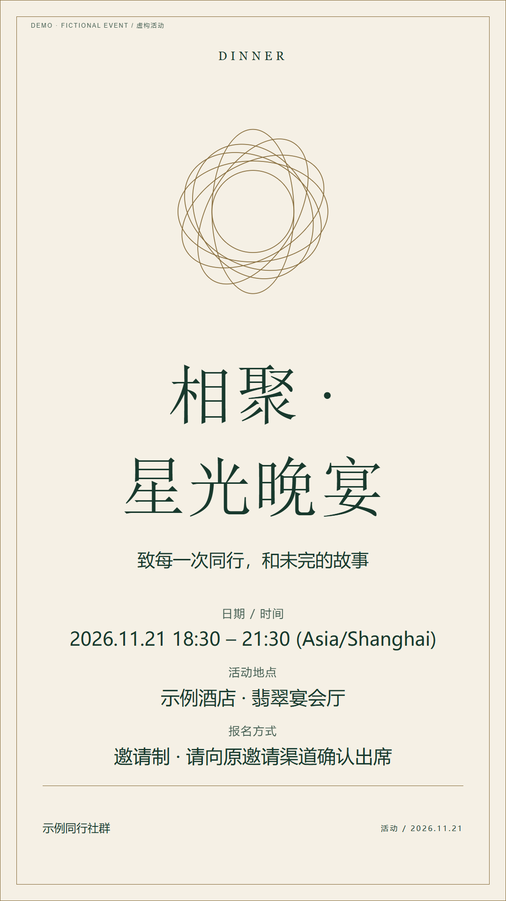
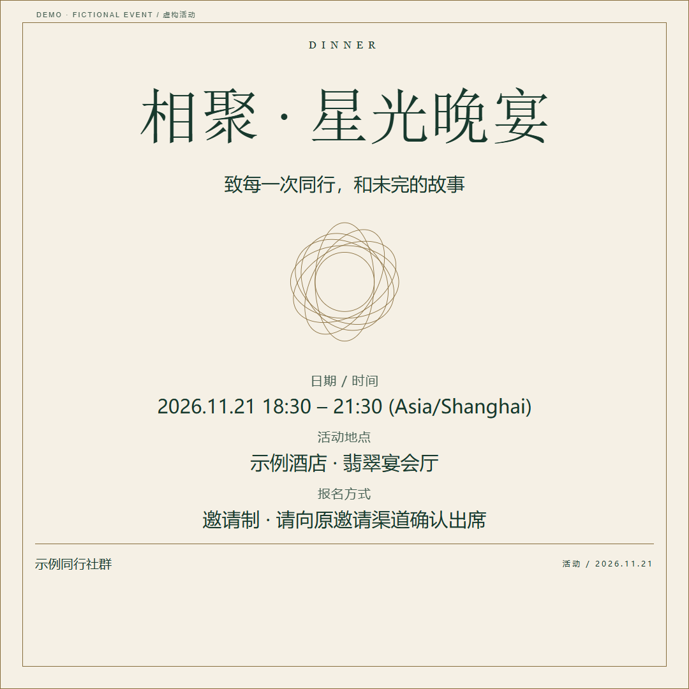
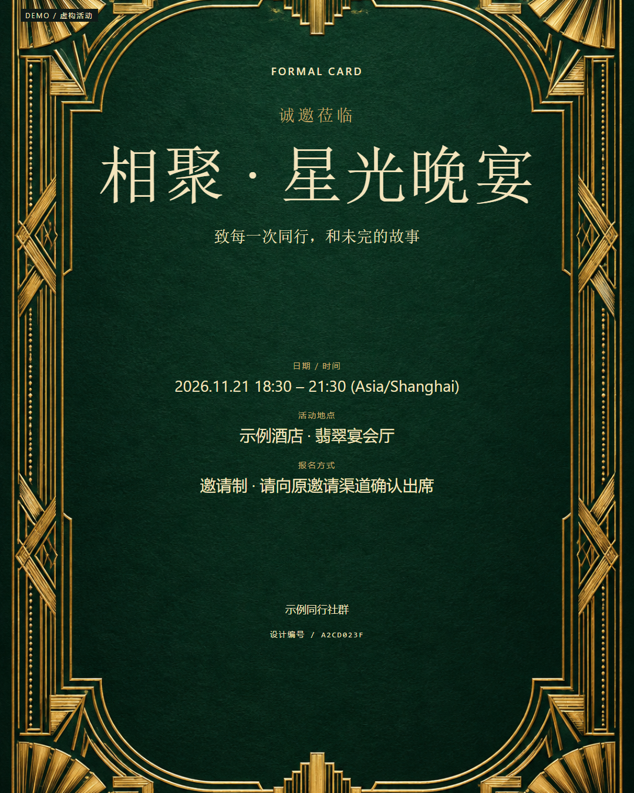

DEMO / 虚构活动
奢华典雅风 · zh



A4 海报 PDF · 正式邀请函 PDF · 活动数据 · 检查记录
DEMO · 虚构活动示例 相聚 · 星光晚宴 2026.11.21 18:30 – 21:30 (Asia/Shanghai) 示例酒店 · 翡翠宴会厅 邀请制 · 请向原邀请渠道确认出席
DEMO · 虚构活动示例 # 相聚 · 星光晚宴 致每一次同行，和未完的故事 时间：2026.11.21 18:30 – 21:30 (Asia/Shanghai) 地点：示例酒店 · 翡翠宴会厅 报名：邀请制 · 请向原邀请渠道确认出席 主办方：示例同行社群
DEMO · 虚构活动示例 # 活动通知 相聚 · 星光晚宴 致每一次同行，和未完的故事 时间：2026.11.21 18:30 – 21:30 (Asia/Shanghai) 地点：示例酒店 · 翡翠宴会厅 报名：邀请制 · 请向原邀请渠道确认出席 主办方：示例同行社群
DEMO · 虚构活动示例 尊敬的来宾： 诚邀您参加「相聚 · 星光晚宴」。 时间：2026.11.21 18:30 – 21:30 (Asia/Shanghai) 地点：示例酒店 · 翡翠宴会厅 报名：邀请制 · 请向原邀请渠道确认出席 主办方：示例同行社群 期待与您相见。